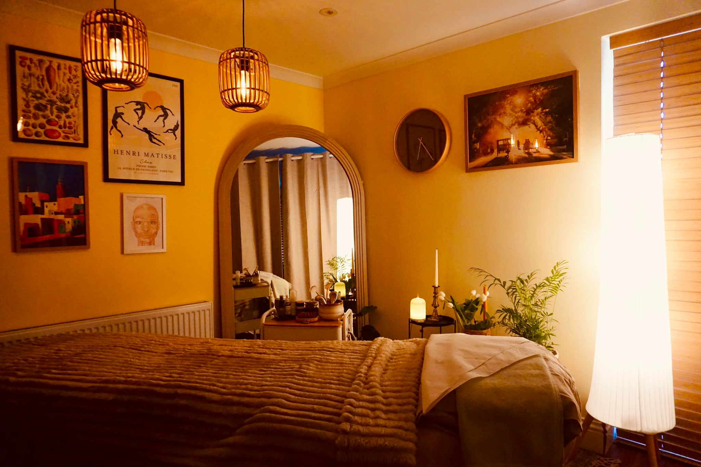
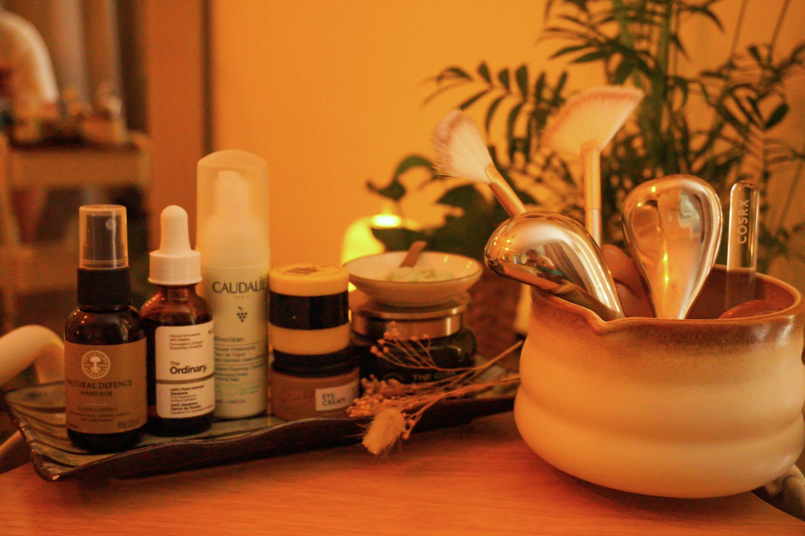
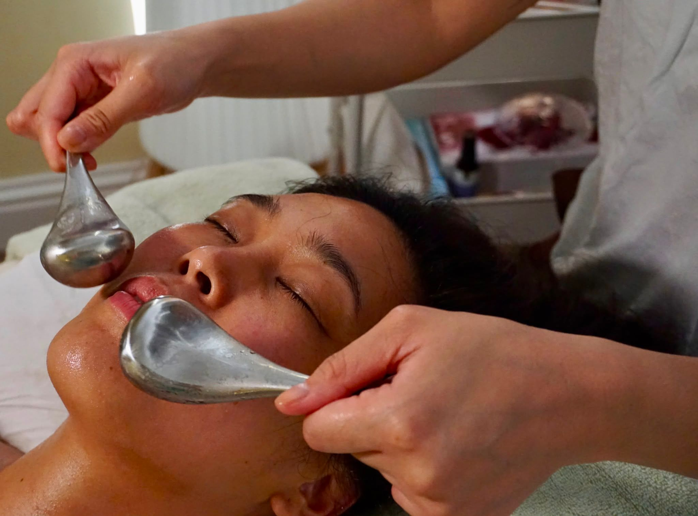
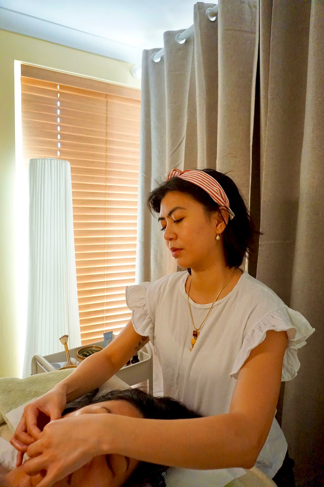
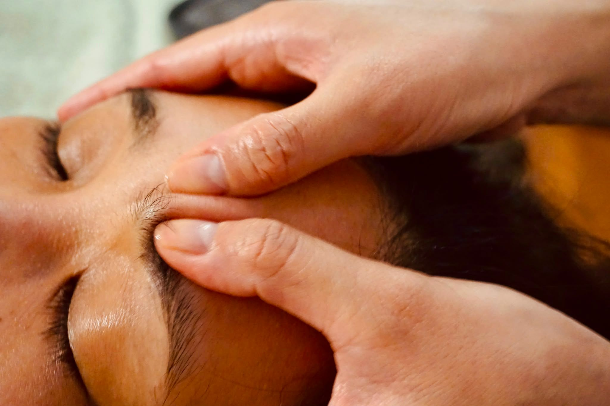
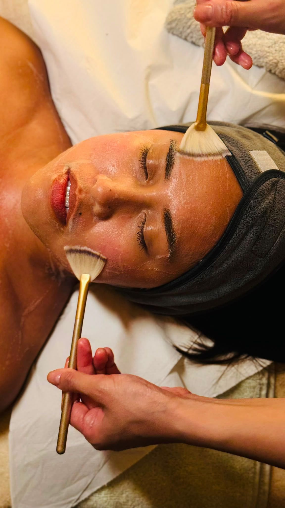
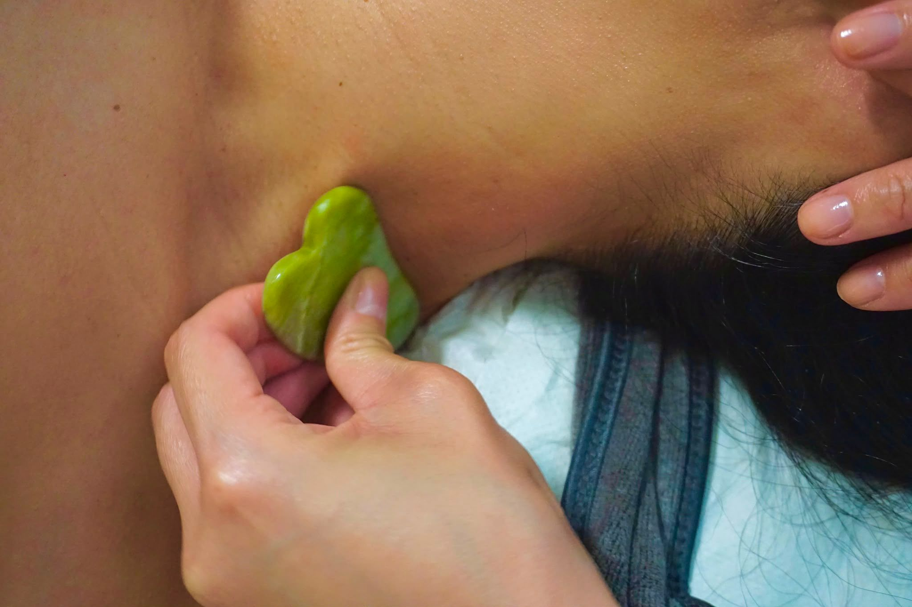
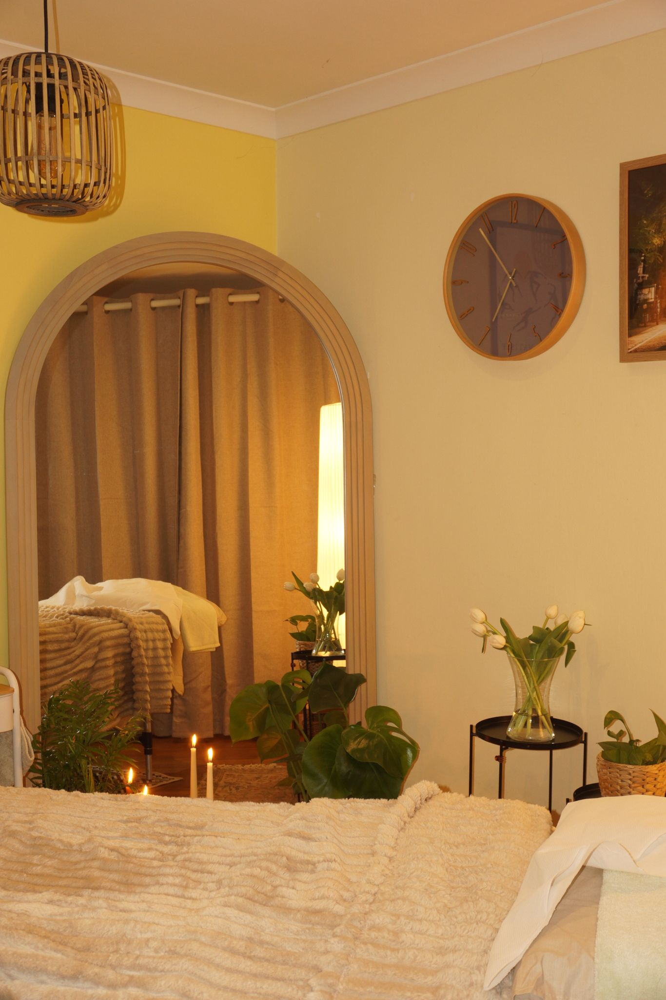

Myofascial release, buccal massage and lymphatic care from a registered nurse, in a quiet room in Surbiton. For women.
Book on Fresha →MukhaMukha Face Yoga, holistic facial therapy in Surbiton
Mukha means face.
In Tagalog, the language of the Philippines where Mona is from, and in Sanskrit, the language of yoga. Each treatment carries a Sanskrit word for what it does.



Treatments.
Each treatment is rooted in intentional touch, nervous system care and natural restoration.
MOKSHA or SAVASANA + ANTAR Most popular · the combination
Discover the combined benefits of our myofascial or relaxation techniques with ANTAR buccal release. Our most popular and most effective treatment, for complete facial and jaw tension release.
- MOKSHA + ANTAR — myofascial release with buccal therapy
- SAVASANA + ANTAR — relaxation & lifting with buccal massage
MOKSHA Liberation · myofascial release
Signature all-hands myofascial release treatment. MOKSHA means "liberation" in yoga philosophy — a release from tension and restriction. Using gentle, targeted pressure across the face, neck, shoulders and jaw to release tension held within the fascia and restore natural flow throughout the body.
Includes a complimentary 10 minute plant-based, organic facial mask.
- Natural lift & reduced puffiness
- Relieves facial, jaw & neck tension
- Improves circulation & mobility
- Supports lymphatic drainage
- Encourages deep relaxation
SAVASANA Deep rest · lymphatic facial ritual
SAVASANA translates to "deep rest" in yoga — a state of complete relaxation and restoration for the mind and body. Choose Savasana if you're seeking deep relaxation and stress relief without the focused intensity of the signature MOKSHA Myofascial Release. Rather than working into the fascia with sustained pressure, this treatment offers a lighter, soothing experience that leaves you feeling rested, grounded, and renewed. Inspired by this practice, this slow-paced facial ritual is designed to encourage nervous system reset through therapeutic touch and intentional stillness. Using organic, plant-based skincare alongside facial massage and essential oils, the treatment helps calm tension, restore balance and support healthy, radiant skin.
Complementary face mask included.
- Deep relaxation & stress relief
- Supports nervous system regulation
- Improves skin health & circulation
- Helps you look lifted and feel restored
ANTAR Inner · buccal release, add-on
ANTAR translates to "inner" — representing inward awareness and release from within. This focused intra-oral technique works deeply into the cheeks and jaw through careful, precise massage to release stored tension and restore balance to the lower face.
Performed using nitrile gloves. Limited to 30 minutes to ensure comfort.
- Releases deep jaw & facial tension
- Helps relieve teeth grinding (bruxism)
- Slims and sculpts the lower face
- Supports facial symmetry & relaxation
URDVHA Upward · at-home gua sha, add-on
In yoga, Urdvha means "upward" — symbolising lift, expansion, and the continuous flow of energy. It represents growth through consistent, intentional practice. Created to help you maintain the benefits of your MUKHA MOKSHA treatment between sessions, Urdvha is an invitation to continue your ritual at home — with intention and care. Your at-home ritual includes a comprehensive guided video tutorial to support your practice with confidence, and the bespoke MUKHA Gua Sha, designed exclusively for MUKHA to complement your facial ritual and encourage lasting results.
Combining healthy lifestyle choices with regular gua sha can extend the effects of Mukha's treatments for up to 4 weeks.
- Tones and lifts
- Boosts circulation
- Reduces puffiness
- Supports collagen
MOKSHA RESET Package · 4 Sessions
While one session works wonders and provides immediate relief, four consecutive treatments lead to longer-lasting benefits. Perfect for those preparing for a special occasion or committing to their wellbeing.
4 × 1 hr 30 min with ANTAR · 350
- Personalised treatment each session
- Holistic facial mask included
- Aftercare & self-care guidance
- Immediate relief & amplified results
POST-OP RECOVERY Package · 4 Home Visits
Personalised facial therapy to support your recovery following cosmetic surgery, delivered in the comfort of your home. Drawing on Mona's background as a registered nurse in maxillofacial surgery, tailored lymphatic techniques support fluid movement, help manage post-op swelling and promote comfort during recovery.
- 4 sessions over 4 weeks
- 70 minutes per session
- Gentle, personalised manual lymphatic techniques
- Convenient home visits
A 10% premium applies to weekend appointments.
Where do you hold it?
Choose what you feel most, and see where Mona would usually begin.
MOKSHA + ANTAR
Myofascial release for the face, neck and jaw, then ANTAR works inside the cheeks, where grinding tension sits.
Book Now →MOKSHA
Gentle, targeted pressure across the face, neck, shoulders and jaw to release tension held within the fascia.
Book Now →SAVASANA
A lighter, slow-paced ritual for deep relaxation and stress relief, designed to encourage a nervous system reset.
Book Now →MOKSHA
Supports lymphatic drainage and circulation, for a natural lift and less puffiness.
Book Now →POST-OP RECOVERY
Four gentle lymphatic sessions at home over four weeks, drawing on Mona's nursing background in maxillofacial surgery.
Email to Enquire →URDVHA
A guided gua sha video and the bespoke MUKHA Gua Sha, to carry the benefits of your treatment between visits.
Book Now →Not sure? Mona reads every health form before confirming, and will suggest what suits you.
Mona, registered nurse.
Founded by Mona, a Registered Nurse and Holistic Facial Therapist, every treatment is guided by both clinical knowledge and intuitive care — creating a safe, nurturing, and restorative space for each client.

Inspired by yoga philosophy and slow wellness practices, MUKHA offers more than a facial. It is a therapeutic experience created to help you slow down, soften, and reconnect with yourself.

- Nursing
- 8 years, registered nurse
- Background
- Theatres, maxillofacial surgery, recovery
- The room
- 101 Ewell Road, Surbiton
- Clients
- Women only, by appointment

Reviews · 5.0 · 14 reviews
"Mona took the time to understand where I was holding tension and tailored the treatment accordingly."
"Such a fantastic experience with Mona. She is so skilled and creates a wonderful calm atmosphere. I looked and felt like a new woman after my treatment! Will definitely be back!"
"I was recommended Mukha by a friend, and it turned out to be exactly what I needed. Mona took the time to understand where I was holding tension and tailored the treatment accordingly. Her approach was skilled and intuitive, and I could feel tightness in my face, neck, and shoulders gradually release throughout the session. What surprised me most were the results afterwards — my face looked visibly lifted, refreshed, and more radiant, with a natural glow I wasn't expecting. I left feeling lighter, calmer, and relaxed. A lovely experience I'd happily recommend."
"I had a wonderful myofascial massage with Mona. The session started with a short consultation focused on my skin type but also potential problematic areas. Mona's attentive approach and ability to target areas of tension made the experience both therapeutic and restorative — what I really appreciated was the wide spectrum of powerful facial techniques she was using. By the end of the session, my face felt lifted and plumped and I couldn't believe the result I was seeing in the mirror! Highly recommend and thank you for the great session Mona!"
"The myofascial and buccal release facial left me feeling completely refreshed and deeply relaxed. Mona's hands are incredibly gentle, and she looks after you with such genuine care from start to finish. A truly soothing experience — and the bonus is walking out feeling like a younger version of yourself!"
"This was my first Mukha face yoga and it will not be my last. I felt totally relaxed at the end of it and my face looked much fresher too. Mona's touch is confident and reassuring. Heavenly!"
"Quite amazing. I felt so tense before this first time treatment today and the after results felt amazing — I could feel the tension fall away and the buccal treatment left my jaw feeling more relaxed. The attention to detail is more than I felt with any other facial treatment. I can highly recommend a visit and I will be booking again. I feel it's a real investment in my health. Thank you"
"Mona has provided an amazing experience. My features feel much softer and lighter. I didn't know this was going to be so transformative, relaxing and uplifting at the same time!! Thank you so much for the treatment!"
"I attended Mukha for a myofascial and buccal release treatment with Mona, and she has been absolutely amazing. From the very beginning, she made me feel comfortable, listened carefully, and provided such a thoughtful and personalised treatment experience. The treatment has been especially beneficial for my postpartum recovery, helping me feel more supported and connected to my body during this period of healing and adjustment. The before and after is absolutely astonishing — I can't believe my facial muscles were that tense. The feeling after is as if my face feels feather light. I would highly recommend Mona and Mukha to anyone considering myofascial or buccal release, particularly as part of postpartum recovery. A truly wonderful experience!"
"The most magical treatment by Mona. I left the beautiful treatment room feeling calm and felt like I was floating on a cloud. I couldn't believe after one treatment how sculpted my face was! I felt glowing inside which was my aim, and also bonus that I was glowing on the outside. Mona is a natural healer and has the most wonderful, calming aura. Her technique was exceptional! She knows her craft. This was exactly the treatment that I needed, so happy to have found it! Thank you Mona - you are magic!"
"I gifted my sister a Moksha Myofascial Release massage and Antar Buccal Release gift card. She was astounded by the noticeable improvement in her facial appearance after just one session. Booking a session or purchasing a gift card is easy on their website, and the information about each procedure is clear, which is great since face yoga is a new concept for me. My sister raved about Mona, the holistic facial therapist, describing her as friendly, professional, and caring. Mona provided a wonderful experience, and my sister is considering signing up for their subscription offer."
"What a fantastic service and experience! From start to finish every detail was taken care of. Mona was super caring and professional. I felt really relaxed afterwards and the before and after images of my face reflected this too! Thank you Mona I'm looking forward to using my monthly package with you!"
"Very friendly caring and knowledgeable practitioner giving a great experience. Highly recommended."
"Third visit and feeling all the benefits that Mona said I would feel overtime. The treatment is of a continuing high standard with attention and care."


Before and after.
Real clients, photographed in the room before and after one session. Results vary from person to person.
View Full Gallery

From the studio.
Mona shares knowledge from her practice — exploring the science and philosophy behind each treatment.
Before you book.
- Flat 2, Richleigh Court, 101 Ewell Road, Surbiton KT6 6AH
- Women only. The room is air-conditioned.
- A 30 deposit secures your booking.
How do I book?
Choose your treatment, date and time on Fresha and fill in the health form. Mona reviews it, confirms your appointment is suitable, then sends a 30 deposit link by WhatsApp or email. The deposit comes off the total on the day.
What if I need to cancel?
Give at least 48 hours' notice and your deposit can move to a new appointment. Cancelling with less notice, or missing the appointment, loses the deposit.
Do weekends cost more?
Yes, a 10% premium applies to weekend appointments. Saturdays are 11am to 6pm, and Sundays are by request only.
Is it suitable for me?
Treatment may not be suitable within 4 weeks of Botox, after recent fillers, surgery or dental work, with active cold sores or skin infections, or in the first trimester of pregnancy. If you are unsure, ask before booking.
Why women only?
Mona works alone from a private home studio, so the policy keeps both client and practitioner safe and comfortable.
Is this a medical treatment?
No. Mona is a registered nurse, but Mukha treatments are complementary wellness therapies. They do not replace advice from your doctor, dentist or specialist.



Visit the room.
Flat 2, Richleigh Court
101 Ewell Road, Surbiton KT6 6AH
- Monday – Friday
- 10am – 7pm
- Saturday
- 11am – 6pm
- Sunday
- By request only
mukha.faceyoga@gmail.com
@mukhafaceyoga
Write to Mona.
Have a question or not sure which treatment is right for you? Send a message and Mona will get back to you personally.